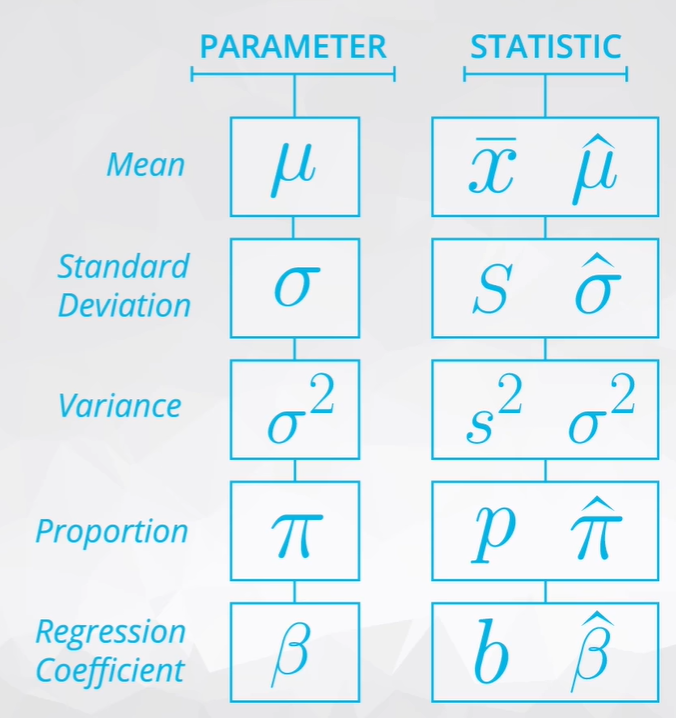

Practical Statistics
Outline
Descriptive Statistics
Descriptive Statistics is about describing our collected data.
- mindmap as below (Link)

Probability
- mindmap as below (Link)

Additional
-
porbability generator:
- 1M test of three fair coin
np.random.randint(2, size=(int(1e6), 3)) - 1M test of 3 unfaired coin
np.random.choice([0, 1], size=(int(1e6), 3), p=[0.6, 0.4])
- Binomial Generator each number of the results represents for the number of heads that resulted from each test of 10 coin flips.
np.random.binomial(n = 10, p = 0.5, size =20)
- 1M test of three fair coin
Practical Statistics
- mindmap as below (Link)

Additional
- notation
 - Theorem
-
Larger number theorem:
as our sample size increases, the sample mean gets closer to the population mean
-
Central Limit theorem:
with a large enough sample size the sampling dist. of the mean will be normally distributed.
-
Confidence Internal
- Margin of error: half the confidence interval width ( for example CI(31,37) then MOE = 3)
- increase sample size -> decrease the width of CI
increase confidence level -> increase the width of CI - Interpretation:
Confidence intervals are for an aggregate about a population like a proportion or average.e.g. We are 95% confident that proportion of users that click through using page A is higher than the average using page b.
e.g.2 We are 95% confident that on average the drug will work for the members of this specific population.
Hypothesis Testing
- mindmap as below (Link)

- Hypothesis tests are about an entire population of interest
H0: usually set up with an equal sign
H1: generally what we want to prove to be true: a drug is effective, a new page performs better
Types of Error
Type I: False Positive
deiciding the alternative is true, when actually the is true
- Type I Paradox
Bonferroni Correction: is a very conservative method for correcting the Type I error threshold when perfoming more than one hypothesis test. It says that the new type I error rate should be the error rate wanted to divide by he number of test performing.
Type II: False Negative
deiciding the null is chosen when the is actually true
Common hypothesis tests
-
Testing a population mean (One sample t-test)).
-
Testing the difference in means (Two sample t-test)
-
Testing the difference before and after some treatment on the same individual (Paired t-test)
-
Testing a population proportion (One sample z-test)
-
Testing the difference between population proportions (Two sample z-test)
| Confusion Matrix |
Decision | ||
|---|---|---|---|
| Positive | Negative | ||
Truth |
True | TP | TP |
| False | FP | FN | |
Simulating
- Method 1
- bootstrap sample
sample = np.random.choice(df.index, replace = True, size = 10000) - subset the data into and
:sample.query(condition 0)
:sample.query(condition 1) - get the mean, std
np.std(h0_df) , np.mean(h0_df)
- bootstrap sample
- Method 2
- simulate a binomial distribution
np.random.normal(mu, sigma, size)
normal_dist = np.random.normal(np.mean(h0_df - h1_df), np.std(h0_df - h1_df), 10000) - get the CI
(np.percentile(normal_dist, 2.5), np.percentile(normal_dist, 97.5))
- simulate a binomial distribution
P value
- Definition:
the conditional probaility of observing the data given that if the null hypothesis is True.
- Types
given thes_meanis the the mean from the null and
null_vals=np.random.normal(mu, sigma, 1000)
| Types | Details | Calculation |
|---|---|---|
| one tail |  |
p = (null_vals > s_mean).mean()) |
| two tails |  |
p = (null_vals < s_mean).mean() + (null_vals >null_mean +(null_means -smean)).mean() |
| more shaded |  |
p = (null_vals < s_mean).mean() |
- Interpretation
samll p-values sugguest our null is not true. When the p-value is large, we have evidence that our statistics was likely to come from the null hypothesis.- Avoid to use word accept when making statements regarding the null and alternative.
We are makeing decisions based on the likelilhood of the data comming from null hypothesis ith regard to the type I error threshold.
- Avoid to use word accept when making statements regarding the null and alternative.
Reject : Have statistically significant evidence to sugguest ...
Fail to Reject do not have statistically significant evidence to sugguest...
notebook
A/B Testing
- Hypothesis
: experiment does not equally or worse than the control
: experiment does better than the control - Drawbacks
- can only compare two options, but not option havent considered
- can produce bias results
- Change aversion
Existing users may give an unfair advantage to the old version, simply because they are unhappy with change, even if it’s ultimately for the better.
- novelty effect
Existing users may give an unfair advantage to the new version, because they’re excited or drawn to the change, even if it isn’t any better in the long run.
- Change aversion
- Other considerations
- Novelty effect and change aversion when existing users first experience a change
- Sufficient traffic and conversions to have significant and repeatable results
- Best metric choice for making the ultimate decision (eg. measuring revenue vs. clicks)
- Long enough run time for the experiment to account for changes in behavior based on time of day/week or seasonal events.
- Practical significance of a conversion rate (the cost of launching a new feature vs. the gain from the increase in conversion)
- Consistency among test subjects in the control and experiment group (imbalance in the population represented in each group can lead to situations like Simpson's Paradox)
AB testing case study
Review ( compare proportion: wookbook, explaination ;
compare difference in mean: wookbook,explaination)
Steps:
- We computed the observed difference between the metric, average reading duration, for the control and experiment group.
- We simulated the sampling distribution for the difference in means (or average reading durations).
- We used this sampling distribution to simulate the distribution under the null hypothesis, by creating a random normal distribution centered at 0 with the same spread and size.
- We computed the p-value by finding the proportion of values in the null distribution that were greater than our observed difference.
- We used this p-value to determine the statistical significance of our observed difference.